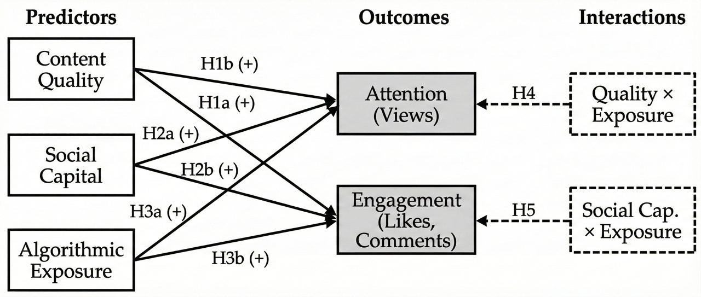
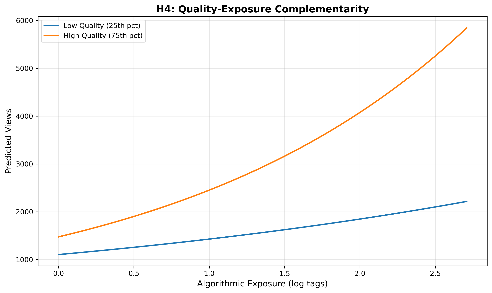
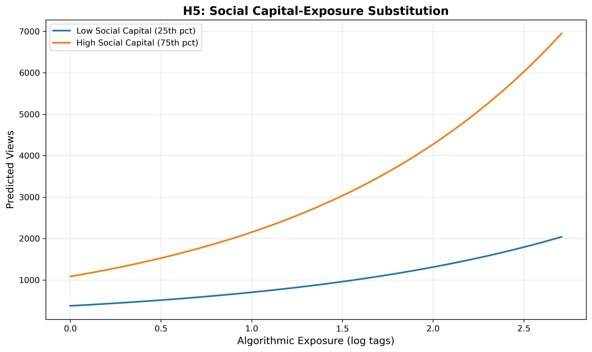
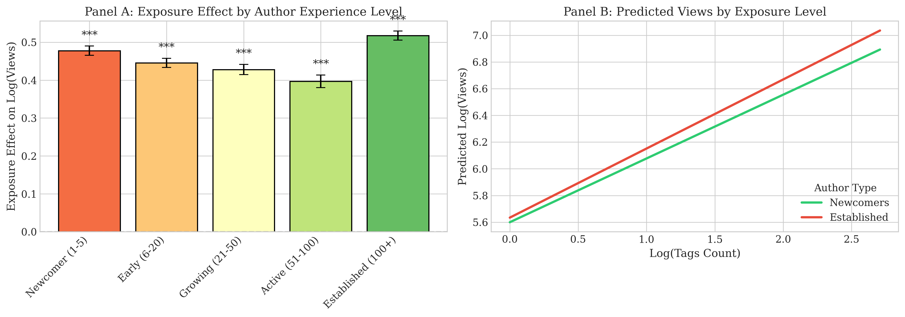
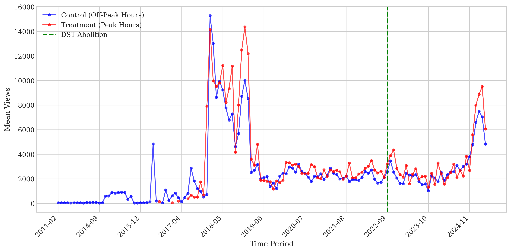
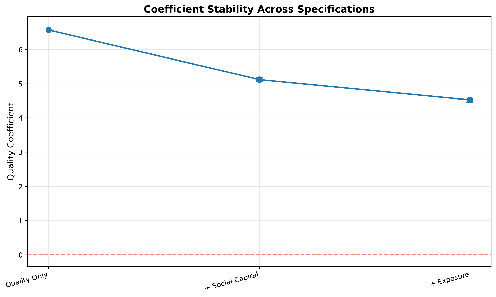
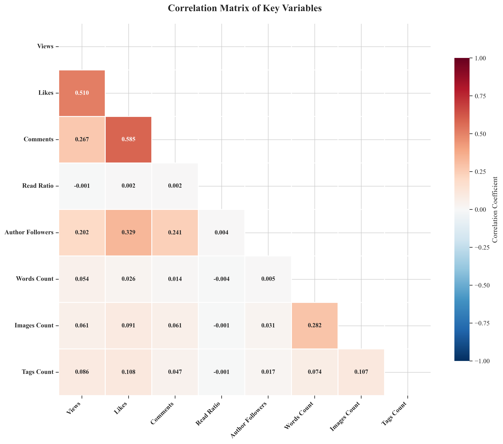
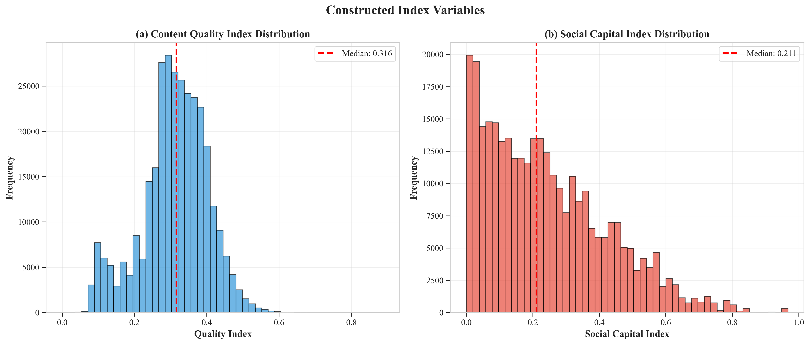
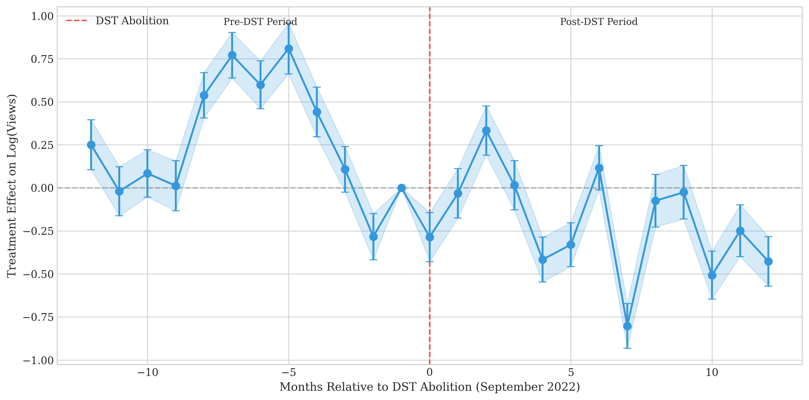

There is too much content and not enough time.
Platforms must decide who gets seen and who doesn't.
For creators, attention equals income.
But is the system fair?
Most research looks at one thing at a time.
Some study Quality. Does good content win?
Some study Social Capital. Do famous people get more famous?
Some study Algorithms. How does the platform decide?
We don't know how they work together.
We combine all three factors in one model.
We test how they interact with each other.
And we check if the system is fair. Does quality win? Or do famous people always win?
Virgool.io is like Medium, but for Persian speakers.
We analyzed 315,000 posts from 2022 to 2025.
It tracks Read Ratio, which tells us what percent people actually read. Most platforms don't share this.
Your network and reputation are valuable. If people know you and trust you, you have an advantage.
Also called the "Matthew Effect". Success brings more success. If you are already popular, you get even more popular.
Algorithms decide who gets seen. Visibility is a limited resource. Platforms must choose who to show to users.
Does the algorithm help everyone? Or does it only help famous people?

Virgool.io is an online publishing platform for social journalism in Persian. It gives users freedom to publish long-form writing beyond short social media formats, making it one of the largest Farsi writing communities.
| Posts analyzed | 679,815 |
| Unique authors | 94,467 |
| Primary sample | 315,000 (Jul 2022-Apr 2025) |
We used NLP tools to measure quality.
We checked readability, vocabulary richness, and how well the text flows.
We also looked at structure like word count and images.
We counted followers and past engagement.
How many likes and comments did the author get before?
We looked at what authors can control to get discovered.
How many tags did they use? When did they post?
Is the topic popular right now?
We measure what authors can control, not the hidden algorithm. We validate this with a natural experiment later.
We built a Quality Index using NLP. We measured readability, vocabulary, and structure. Then we validated it against actual Read Ratio.
We use Author Fixed Effects. This compares each author to themselves over time. So if I write a better post today than yesterday, does it get more views?
How do we know exposure causes attention? Maybe good content just gets posted at good times.
We use hourly content supply as an instrument. When fewer posts are published, exposure rises randomly.
We also found a Natural Experiment.
Iran abolished Daylight Saving Time in Sept 2022. User behavior shifted by 1 hour overnight. Nothing else changed. I will show you the results later.
Supported High quality brings more views. Strong effect.
Paradox! High quality hurts engagement in Lifestyle topics.
Why? Lifestyle readers want easy, casual content. Complex articles feel "too heavy" for them.
Lifestyle
Travel, Cooking, Personal
Technical
Programming, Science
Effect of Quality on Engagement Rate by Topic
Match your writing style to your audience. Know what your readers expect.
Supported More followers = more views.
But there are diminishing returns:
Your first 1,000 followers help a lot.
Going from 10,000 to 11,000 doesn't change much.
(β² = -0.51*** means the benefit gets smaller)
Supported Followers also increase likes and comments.
Social capital matters more for deep engagement than just views. Your followers are the ones who actually interact with you.
Yes! Strongly Supported
Look at the graph. The lines are spreading apart.
If you have low quality, exposure doesn't help much.
But if you have high quality, exposure makes it even better.
The algorithm rewards quality. Good content wins big when it gets seen. This is good news.

High-quality content benefits more from exposure.
No! The opposite happened.
We expected exposure to help newcomers more. They have no reputation, so they need the algorithm.
But the reality is different. Look at the numbers.
Newcomers get +34% boost from exposure.
Famous authors get +57% boost.
The rich get richer. The platform increases inequality, not solves it. This is bad news.

Famous authors benefit more from exposure.
| Hypothesis | Prediction | Result | Status |
|---|---|---|---|
| H1a: Quality → Engagement Rate | β > 0 | β = -3.55*** (moderated) | Partial |
| H1b: Quality → Views | β > 0 | β = 6.57*** | Supported |
| H2a: Social Capital → Views | β > 0, β² < 0 | β = 4.87***, β² = -0.51*** | Strong |
| H2b: Social Capital → Engagement | β > 0 | β = 5.37*** | Supported |
| H3a: Exposure → Views | β > 0 | β = 0.60*** | Supported |
| H3b: Exposure → Engagement | β > 0 | β = 0.53*** | Supported |
| H4: Quality × Exposure | β > 0 | β = 2.33*** | Strong |
| H5: Social Capital × Exposure | β < 0 | β = +0.23*** | Not Supported |
H4 is good news. Good content benefits more from exposure. The algorithm rewards quality. This is what we hoped.
H5 is bad news. Famous authors benefit more than newcomers. The rich get richer. This is not fair.
| Author Type | Exposure β | 95% CI |
|---|---|---|
| Newcomer (≤10 posts) | 0.474 | [0.464, 0.484] |
| Established (>100 posts) | 0.518 | [0.506, 0.530] |
| Difference | -0.043 | p < 0.001 |
Established authors benefit significantly more from exposure than newcomers.
Platforms increase inequality.

How do we know exposure causes attention? Maybe popular content just gets posted at good times.
Iran abolished Daylight Saving Time in September 2022. User behavior shifted by 1 hour overnight. Nothing else changed.
| Basic Model | -2.1% | p > 0.1 |
| With Controls | -6.3% | p < 0.001 |
| Full Model | -8.3% | p < 0.001 |
Conclusion: Timing causes attention. This is causal, not just correlation.

Groups were identical before the change (Parallel Trends). The shift happened exactly on the policy date.
1. Model Comparison
We ran Poisson, Negative Binomial, and OLS regression. All three models gave similar answers for the quality effect.
2. Outlier Sensitivity
We excluded the top 1% and 5% most viral posts. The quality effect stays significant even without outliers.
3. Variable Transformations
We measured followers using log, square root, and raw values. Results are consistent across all transformations.
4. Content Length
We analyzed short, medium, and long posts separately. Quality effect works for all content lengths.
5. Temporal Stability
We ran yearly analysis from 2017 to 2025. Effects are stable over all 8 years.

Quality effect stays positive as we add more controls
No matter how we test it, quality matters. These results are real and stable.
Success is a mix of Quality, Social Capital, and Exposure. You need to look at all three.
Algorithms prioritize Quality. Good content gets a massive boost (Amplification Effect).
Algorithms prioritize Social Capital even more. The "Rich Get Richer".
You must write for your audience. Don't overcomplicate lifestyle content.
One Platform:
We studied Virgool.io only. Results may differ on YouTube, TikTok, or Instagram.
Text-Only:
Our quality measure is for text. Video and image quality might work differently.
Large Sample:
With 315,000 posts, even small effects become statistically significant. We focus on practically meaningful effects.
Test on Other Platforms:
Do these patterns hold on YouTube, TikTok, Instagram?
Track Over Time:
How do these effects change as creators grow their careers?
Design Better Platforms:
Can platforms reward quality without increasing inequality?
| Does Quality matter? | YES (β = 6.57) |
| Does Social Capital matter? | YES (β = 4.87) |
| Quality + Exposure? | Positive Interaction |
| Social Capital + Exposure? | Reinforcement |
Good News: Algorithms help good content get discovered.
Popular authors benefit more from visibility than newcomers.
This is the Cumulative Advantage effect.
Implication: We need fairer algorithms that give newcomers a chance.

Followers correlate more with likes (r = 0.24) than views (r = 0.12), supporting differential social capital effects.

(a) Content Quality Index: approximately normal. (b) Social Capital Index: right-skewed.

Each dot is a weekly coefficient. X-axis = weeks before/after DST abolition (Sep 2022). Y-axis = effect size.
Coefficients are flat and near zero. This confirms Parallel Trends (groups were similar before).
We see a clear shift. DiD coefficient = -0.063 (p < 0.001). Timing matters for attention.
This proves Exposure causes Attention. It's not just correlation.
| Construct | Definition | Measures | Type |
|---|---|---|---|
| Dependent Variables | |||
| Attention | Allocation of cognitive resources | views: Total post views | Count |
| Engagement Depth | Meaningful interaction beyond exposure | likes, comments, read_ratio | Count; Bounded |
| Engagement Rate | Interaction normalized by exposure | likes_per_100_views, comments_per_100_views | Fractional |
| Independent Variables | |||
| Content Quality | Intrinsic value and consumability | Linguistic: readability, lexical diversity. Semantic: coherence (ParsBERT). Structural: words_count, images_count | Continuous |
| Social Capital | Network resources and reputation | author_followers (log), author_total_likes, author_tenure | Count; Days |
| Discoverability | Author-controlled visibility | tags_count, topics_count, temporal position, platform_content_supply | Count; Categorical |
| Interaction Effects (H4, H5) | |||
| Quality × Exposure | Complementarity between quality and visibility | Quality index × Discoverability index | Continuous |
| Social Capital × Exposure | Substitution between reputation and visibility | log(Followers) × Discoverability index | Continuous |